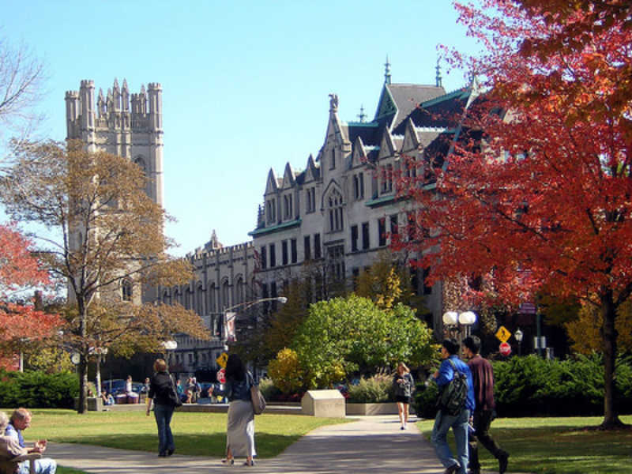

The 25 Best Great Books Programs

Plutarch that most ancient and eminent historian said, “The mind is not an empty vessel to be filled, but a fire to be kindled.” This is the foundation of all Great Books schools. Imagine school as a vibrant garden to grow in knowledge and virtue. Imagine school not as a place to sit and listen to lectures for a few years, but rather, a way of life and pursuit of most noble ends. Imagine school as an ongoing conversation about the most profound ideas mankind has conceived: truth, justice, liberty, beauty, poetry, drama, God, and the afterlife to name a few. Imagine being taught by the greatest masters of the mind that walked on this earth: Plato, Jefferson, Franklin, Locke, Voltaire, Dostoyevsky, Dickens, Aristotle, Aquinas, and more, who though dead, live on in Great Books. If you can imagine such a place, you’ve imagined a Great Books or Liberal Arts education. One of the greatest English minds of the 19th century, Cardinal John Henry Newman, author of The Idea of a University, states the idea most eloquently: “This process of training, by which the intellect, instead of being formed or sacrificed to some particular or accidental purpose, some specific trade or profession, or study or science, is disciplined for its own sake, for the perception of its own proper object, and for its own highest culture, is called Liberal Education.” Though these schools are not as common as they once were, they offer a high quality and unique education for many a soul.
Our list was chosen based on the following criteria:
• The curriculum and readings consist of Great Books, classics that have been tested and tried by time for their enduring contribution to civilization.
• Though pedagogy and specific curriculum may differ, all include Socratic dialog in their methodology.
• Only programs that offer four-year degrees were considered.
• Small class sizes.
• A minimum of 30 credit hours in Great Books style education,
25. University of Chicago

The University of Chicago is known for its Core Curriculum, a curriculum that provides the background for any major, as well as continuing study after graduation. Together with peers and faculty, students engage in the great conversation examining and re-examining the questions that philosophers, psychologists, economists, biologist, writers, and social theorists have been wrestling with for ages – such as, what is Justice? What does true equality look like? Students read primary texts and engage in thoughtful dialog in small, discussion-based classes, where they learn how to think about an idea. Upon graduation, students have the skills to read and analyze primary documents, and communicate ideas effectively. Through exploring great questions that others have asked, they are ready to ask their own, leading to a better understanding of themselves and the world around them.
24. Ohio Wesleyan University

Ohio Wesleyan University is a liberal arts and sciences university located in Delaware, Ohio and 20 miles from the capital city of Columbus. The university offers 86 majors and 57 minors as well as 23 varsity sports. The Great Books tradition is strong and extends throughout their Humanities division programs, which include both Comparative Literature and Classics. The Classics program is small but academically rigorous. Students study ancient Greece and Rome, the ancient Greek, and Latin languages and literature through a study of epic, lyric and elegiac poetry, tragedy and comedy, ancient history and philosophy, and classical mythology and religion. Classics majors are equipped for a variety of career and lifetime pursuits, as well as continuing education. Given the sound training in skills of critical reasoning, graduates often go on to pursue graduate degrees in law and medicine.
23. Faulkner University

Faulkner University, located in Montgomery, Alabama is home to multiple colleges: the Alabama Christian College of Arts and Sciences, the Harris College of Business and Executive Education, the V.P. Black College of Biblical Studies, the College of Education, and the Thomas Goode Jones School of Law. Faulkner also offers their Great Books Honors College program. Here students work with their academic department to incorporate Great Books with their particular discipline. Faulkner also offers three online Great Books based degree programs through its Christian Institute for the Study of Liberal Arts, and programs for adult learners with both online and part time programs. Take it from C.S. Lewis (and the Great Books Honors College webpage) “The only people who achieve much are those who want knowledge so badly that they seek it while the conditions are still unfavorable.”
22. St. Olaf College

St. Olaf College, located in Northfield, Minnesota, offers students a unique Great Books program called the “Conversation.” These programs are interdisciplinary, team-taught explorations that take students on five distinct intellectual journeys through influential texts and ideas that have shaped our thought today through careful listening and persuasive argument. These programs vary in focus and scope, from the origins and development of Western Civilization, to the formation and ideals of America’s national culture, the exploration of environmental issues, and the rich history of Asian culture. In addition to an excellent education, St. Olaf students have ample opportunities to participate in the arts; each year St. Olaf puts on a world renowned Christmas Festival, along with much other music, theater, and dance productions.
21. Mercer University

The philosophy of the Great Books program at Mercer University is as follows, “the great books that are read, discussed, and written about in the program are among the most important books of the Western tradition. They record the inventions of the human imagination, the discoveries of the human intellect, and the inquiry that gave rise to and shaped them…These books continue to illuminate the human condition in ways that engage our minds, hearts, and spirits.” This sums up Mercer’s Great Books program. Students enrolled in this educational endeavor take eight courses that serve as one of the general education tracks in the College of Liberal Arts. Mercer University is a private university that was established in 1833; it is located in Macon, Georgia.
20. Central Washington University

The motto of William O. Douglas Honors College is sapere aude, or “dare to be wise.” Central Washington University is home to this unique Honors College that provides an enriched program of studies in the arts, humanities, and natural and social sciences, by developing their skills in reading, writing, critical thinking, and public speaking. The program is built based on four pillars: undergraduate research, leadership, critical inquiry, and civic engagement. Students benefit from small class size based on inquiry and dialog while discussing the great ideas. The college is named for U. S. Supreme Court Justice William O. Douglas, who was a native of the central Washington city of Yakima. He retired from the Supreme Court in 1975 after serving for 37 years, longer than any other Justice in history; the Honors College desires their students to follow his example by pursuing intellectual breadth, academic curiosity, and the application of scholarship to pressing social issues.
19. Benedictine College

Benedictine College launched its Great Books Program in academic year 2014-15 and is an option for students who want to fulfill general education requirements in a more liberal arts format. This program revolves around a Great Books sequence over four years which will take students through the development of human thought during the Ancient World, the Middle Ages, the Renaissance, and the Modern Age. Great Books students will be encouraged to spend a semester in Florence, Italy, where they will be introduced to the cultural richness of the west. Though the Great Books Program is new, Benedictine College was founded in 1858 by two Benedictine monks and six students. It is located on the west bank of the Missouri River in the historic city of Atchison, Kansas. There are now nearly 2000 students at Benedictine and students benefit from a 15:1 student/faculty ratio.
18. University of San Francisco – St. Ignatius Institute

Students at the University of San Francisco can join the St. Ignatius Institute, a core living/learning community that is distinctively Jesuit. St. Ignatius Institute students will enjoy a Great Books education, complete with smaller seminar-style classes, study abroad opportunities, a focus on service, and rigorous academics. Graduates will be ready to face the challenges of our world today with a well-rounded liberal arts education. University of San Francisco core requirements are met by taking classes in Ancient Greek and Roman Literature and Culture, Modern Literature, Ancient Philosophy, Western Heritage, Sacred Scripture, Catholic Thought, Music and Art, and Ethical Theory and Practice. As students explore these difficult subjects, they will be working alongside peers and faculty who are ready to enter into challenging discussion while wrestling with the same issues. Located in the charming city of San Francisco, the St. Ignatius Institute offers an excellent education in an exciting place to live.
17. University of Notre Dame

The University of Notre Dame offers students the Program of Liberal Studies (PLS), a three-year prescribed sequence of seminars and tutorials anchored in the Western and Catholic traditions. Founded in 1950, the PLS finds its roots in the Great Books movement. Small classes meet twice weekly at Great Books seminars to study and discuss major tests, while taking tutorials that offer deeper, more focused explorations in literature, philosophy, science, theology, political theory, the fine arts, and history that parallel the text being studied. The vision of PLS is to produce graduates who can read texts critically, formulate and articulate thoughtful arguments, and communicate effectively in the world today. While participating in the program, students are encouraged to reach into the community through various community extension activities, fulfilling responsibilities to the ideas being learned as well as to Catholic Social Teaching. Currently, students volunteer at the South Bend Center for the Homeless as well as various schools throughout the community.
16. Northeast Catholic College

All courses Northeast Catholic College are built upon the close reading and discussion of the Great Books, books that have been recognized as historically important over time. Students engage in dialog about these excellent pieces of literature, asking important questions about human nature, human flourishing, and the political order while building a worldview based on truth. After completing 110-hours of core coursework, students will be ready to discuss theology, politics, literature, philosophy, science, math, music, art, and comparative cultures along with the greatest thinkers the world has ever seen. Located in picturesque Warner, New Hampshire, Northeast Catholic College is found in 135 acres of pine and hardwood forest, open fields, gravel footpaths, and stone walls that are the remnants of late nineteenth century farms. The campus is designed as a traditional New England village, and students from the college are actively involved in the local community.
15. Kentucky State University

Students at Kentucky State University can participate in the Whitney Young School of Honors and Liberal Studies, a program specially designed to develop the intellectual skills of reading, writing, speaking, listening, and critical thinking. Small class sizes with faculty dedicated to this program make the table discussions and great conversations a central part of learning. The great authors are the considered teachers, and students have the benefit of participating in the conversation that has been going on throughout history with their colleagues and collaborators. Students are encouraged to ask questions and challenge assumptions. In order to earn an Honors B. A., students must complete 30 credit hours in honors courses, including three seminars and two tutorials, a senior essay, and three other courses of approved electives. Notably, many students at KSU double-major in liberal studies and another discipline.
14. George Wythe University

GWU is named after George Wythe, who helped develop the Bill of Rights and was the personal mentor to Thomas Jefferson, James Madison, John Marshall, and other notable founders of the United States, GWU lives up to its namesake by integrating the educational experience with mentoring by existing statesman in around the State Capitol. This is known as the Williamsburg Model. George Wythe University is a classical liberal arts school with undergraduate and graduate programs designed to produce leaders with the foundation and characteristics required for good government. There is a focus on protecting liberty, promoting free-enterprise, preserving moral ethics, limited government, inspiring civility, and strengthening individuals, families and society. Students will participate in a Great Books curriculum, delving into original sources and discussing the Great Ideas with mentors and peers.
13. Gutenberg College

Located in the dynamic city of Eugene, Oregon, known for its progressive-thinking, alternative schools, growers markets, and community inventiveness lies Gutenberg College, a small Christian liberal arts college offering a Great Books education. The goal for graduates of Gutenberg is to “become mature adults who know how to live well, people who have carefully crafted a sound worldview, and who have acquired the knowledge and skills to live productive and constructive lives.” Graduates from Gutenberg receive a Bachelor of Arts in Liberal Arts. The first two years at Gutenberg are spent acquainting the students with historical context and the main themes of the Great Conversation by reading works that have been influential throughout history and analyzing these works through reading, writing, and thinking skills. During the final two years, students delve deeper into classic works, examining them completely and working independently.
12. University of Texas at Austin

Inspired by one of the most incredible presidents in U.S. History, The Thomas Jefferson Center at UT at Austin is aimed at “educating citizens and leaders to understand the meaning of liberty and to exercise it wisely.” Jefferson believed this to be possible by being educated in the liberal arts tradition of Great Books. There are multiple programs and opportunities that offer a great books style education at UT; however, not all offer 4-year degrees. With any of these programs the Thomas Jefferson Center is an “education for liberty, for leaders, and for life,” but the Humanities major is for motivated student who wishes to earn a B.A. in a Great Books education. It consists of 42 credit-hours on top of the UT general requirement (at least 30 credit hours in general education is required to apply) and can be tailored to specific student interests from Health Care Policy to Economics or Philosophy. All programs are taught with a Socratic methodology focusing on inquiry and expression.
11. Boston College

Students at Boston College have the opportunity to participate in the Perspectives Program, a four-year program designed to help students remember our intellectual and spiritual heritage while working out for themselves coherent answers to the enduring questions of the universe. Students and faculty enter into conversation with ancient, modern, and contemporary thinkers who have shaped our intellectual history. This interdisciplinary course is grounded in the great texts of Western Culture and seeks to integrate the humanities and natural sciences. Students come away from the Perspectives Program with an Honors Major. Boston College is a private Jesuit Catholic research university with over 9,100 full-time undergraduates and almost 5,000 graduate students. It is located in the village of Chestnut Hill, Massachusetts, only six miles from downtown Boston.
10. Columbia College

Columbia College traces its roots of excellent education back to 1754 when the College enrolled its first class, taught by colonial scholar and Anglican minister Samuel Johnson, who was also the College’s first president. The College is known for its Core Curriculum, a set of common courses required of all undergraduates and considered necessary general education for students, regardless of their choice of major. This communal learning, where all students encounter the same texts and issues at the same time while engaging in critical dialog in small seminars are distinctive features of the Core. This method of communal learning began in the early 20th century, but the Core Curriculum is one of the founding experiments in liberal higher education in the United States and remains vibrant today. Columbia College was home to Mortimer J. Adler, one of the founders of the “Great Books of the Western World,” a 54-volume series first published by Encyclopedia Britannica in 1952, and a seminal name in the classical education movement. Books included in this set are informally known as the “Great Books.” Though there is no specified and agreed canon of Great Books, Adler’s famous collection stands in many minds a reliable and proven list. It includes authors such as Aristotle, Plato, Shakespeare, Chaucer, Euclid, Kepler, Darwin, Locke, and Marx.
9. The Thomas More College of Liberal Arts

A four-year Catholic liberal arts college, The Thomas More College of Liberal Arts offers a program that combines intensive reading of the Great Books with lectures and seminar discussions, placing those works in their historical, cultural, and theological context. There is a 10:1 student to faculty ratio, guaranteeing students personal one-on-one discussion with faculty. Upon graduation, the average student has translated over 1,000 lines of Homer, Cicero, and other Classical authors, read 10,000 pages of the Great Books, visited over 100 Baroque churches, Roman architectural sites, Renaissance piazzas, and catacombs, written a Senior Thesis and presented it to the entire college, and designed a personal series of tutorials to test academic interests and talents. The College welcomes students of all faiths. Located in Merrimack, New Hampshire, the college is 45 minutes north of Boston and one hour from the Atlantic Seacoast and the White Mountains. All students spend one semester studying in Rome at a historic villa with the Maronite monks of Saint Anthony Monastery a mere five miles from the Vatican.
8. University of Dallas

The curriculum at University of Dallas is “based on the supposition that a true education seeks out truth and virtue.” In 1956, Catholic Bishop Gorman announced that a university that had been long in the making would open in Irving, Texas as a four-year co-educational institution welcoming students of all faiths and races. There were 96 students when it originally opened who learned under the guidance and teaching of members of the Cistercian Order and the Sisters of Saint Mary, three Franciscan fathers, and a number of laymen. All students at the University of Dallas are required to take a 60-credit hour Core Curriculum that begins with the Greeks and moves forward through the great thinkers of Western Civilization. This nationally recognized program has students learning from the greatest thinkers and writers of all time: Virgil, Sophocles, Aristophanes, Adam Smith, William Faulkner, Jane Austen, and Thomas Jefferson. Graduates truly live up to the mission of this great university and have sought out truth and virtue.
7. Shimer College

Shimer College is truly a unique place. A self-governing community of less than 150 students, no more than 12 per class, located in the heart of Chicago, this college operates unlike any other. Once affiliated with the University of Chicago, Shimer separated in order to pursue a more focused, rigorous curriculum based entirely on primary sources, and learning based on dialog, not lecture. With a strong commitment to the value of the liberal arts, this small college knows who they are and what they are about – teaching students how to think, not what to think. Over the course of four years, students will take 85 credits of core courses and 40 credits of electives, graduating with a Bachelor of Arts degree in Humanities, Social Sciences, or Natural Sciences. Shimer was founded in 1853 and continues to be a dynamic force in education today.
6. Thomas Aquinas College

No textbooks. No classroom lectures. No majors, minors, electives, or specializations. The curriculum is comprised of sustained conversation in the form of tutorials, seminars, and laboratories guided by tutors who work alongside students to read, analyze, and evaluate Great Books. This is a Thomas Aquinas College education. Students learn from Homer, Herodotus, Plato, Euclid, Einstein, and St. Thomas Aquinas, all while building an academically excellent liberal arts education. Upon graduation, students possess the skills to pursue any graduate degree or career through their excellent ability to read, inquire, articulate their thoughts, and live life intentionally and to the fullest. This academically rigorous college is located in sunny southern California, 65 northwest of Los Angeles.
5. Christendom College

Cardinal John Henry Newman’s Idea of University, still used in many universities as a text in the philosophy of education, can be seen concretely working out at Christendom. A premier Catholic liberal arts college that offers a challenging 86-hour core curriculum, Christendom College produces graduates with excellent skills and abilities in critical thinking, written and oral communication, adaptability, creativity, organization, and responsibility. Christendom has four campuses. The main campus, called the Front Royal campus, overlooks the scenic Shenandoah River with views of the Blue Ridge Mountains. Other campuses are located in Alexandria, Virginia with two in Europe, Donegal, Ireland, and Rome, Italy. Steeped in Catholic tradition and teaching, the Catholic faith is an integral in Christendom education. The goal of Christendom is to train students in the skills of living the “good life”, as Aristotle would say, especially the life of the mind, useful for any career and all of life.
4. St. John’s College

Founded in 1696 as King William’s School in Annapolis, Maryland, and chartered in 1784 as St. John’s College, this college is a leader in classical education today. In 1937, the college adopted a unified curriculum based on the study of great works in the humanities and sciences with the premise that inquiry and discussion are at the heart of learning. In 1964, the college opened a second campus located in Santa Fe, New Mexico. Students enrolled at one campus can transfer to the other; many students choose to spend a year at the other campus during their education. St. John’s is often cited by other Great Books programs for time-tested reading lists, methodology, and excellence in the craft of classical education. The faculty at St. John’s see themselves as mentors whose task is not to transmit information, but facilitate discussion and inquiry by posing questions that allow the students to develop as thinkers and formulate their opinions. Students spend their time discussing every subject including philosophy, literature, history, theology, politics, economics, music, mathematics, and sciences.
3. Hillsdale College

Known as the first American college to prohibit admissions discrimination based on race, sex, or religion, and the second college in the nation to grant a four-year liberal arts degree to women, Hillsdale College is a leader in Great Books education today. Every Hillsdale student, regardless of major is required to complete a core curriculum that includes courses on the Great Books and the U. S. Constitution. Hillsdale is responsible for Imprimis, a monthly publication consisting of almost entirely edited transcripts of speeches delivered by conservative movement leaders at Hillsdale-sponsored events. Imprimis is a free publication and is sent out to over 2.5 million people per month. Hillsdale is one of the only colleges in the nation that does not accept federal financial aid but assists students solely with private money. Certainly a unique institution, students at Hillsdale will benefit from the 10:1 student-faculty ratio, rigorous academics, intramural sports, national fraternity and sorority houses, and widespread community volunteerism. There is no doubt that graduates from Hillsdale have received a top-notch education.
2. New St. Andrews College

Boasting an 11:1 student to faculty ratio and tuition that is nearly half the national average, New St. Andrews College in Moscow, Idaho provides a top-notch education in the classics. Students study Hebrew, Logic, Greek, English grammar, along with reading the Great Books that have shaped Western Civilization, ensuring that each student receive a truly liberal arts education. Students who graduate college with a liberal arts education are not specially trained in one field but possess the knowledge and skill to pursue any career. Graduates from New St. Andrews have gone on to become skilled engineers, lawyers, accountants, authors, editors, farmers, and teachers and have pursued graduate degrees at prestigious universities such as Duke, Princeton, and Vanderbilt.
1. Biola University – Torrey Honors Institute

Nestled in the hills of sunny La Mirada, California, a suburb of Los Angeles, lies the Torrey Honors Institute of Biola University. This academically rigorous program is completely focused on the Great Books, where students learn how to think and to examine every subject from a variety of perspectives. Students read 10 to 15 books per semester, almost one book per week. Socratic discussion, led by a trained tutor, is a central part of a Torrey education. The tutor is not seen as the teacher. Instead, students are learning from the great thinkers from history; Plato, Socrates, Augustine, and Dante are their teachers as they participate in the Great Conversation. Not only is a Torrey education well-rounded and excellent, the setting makes learning all the more enjoyable. Located in the heart of southern California, students enjoy over 260 days of sun per year, along with easy access to the beach, amusement parks, and California culture.